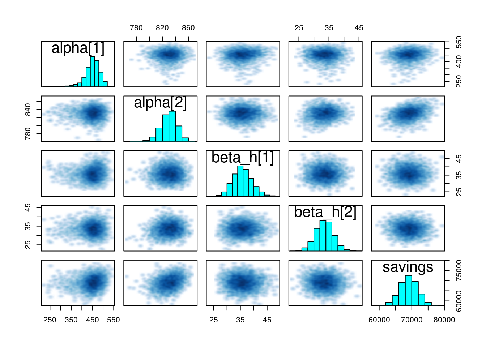
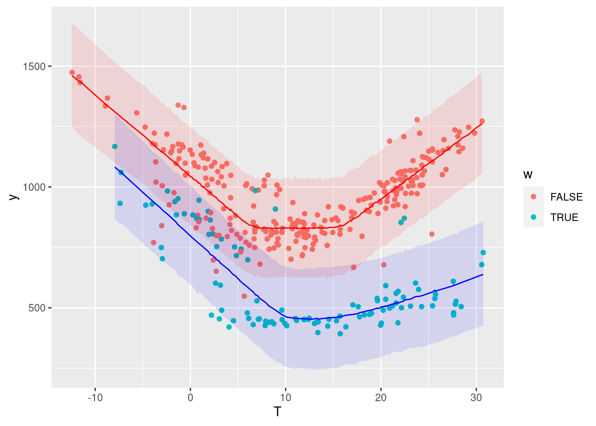
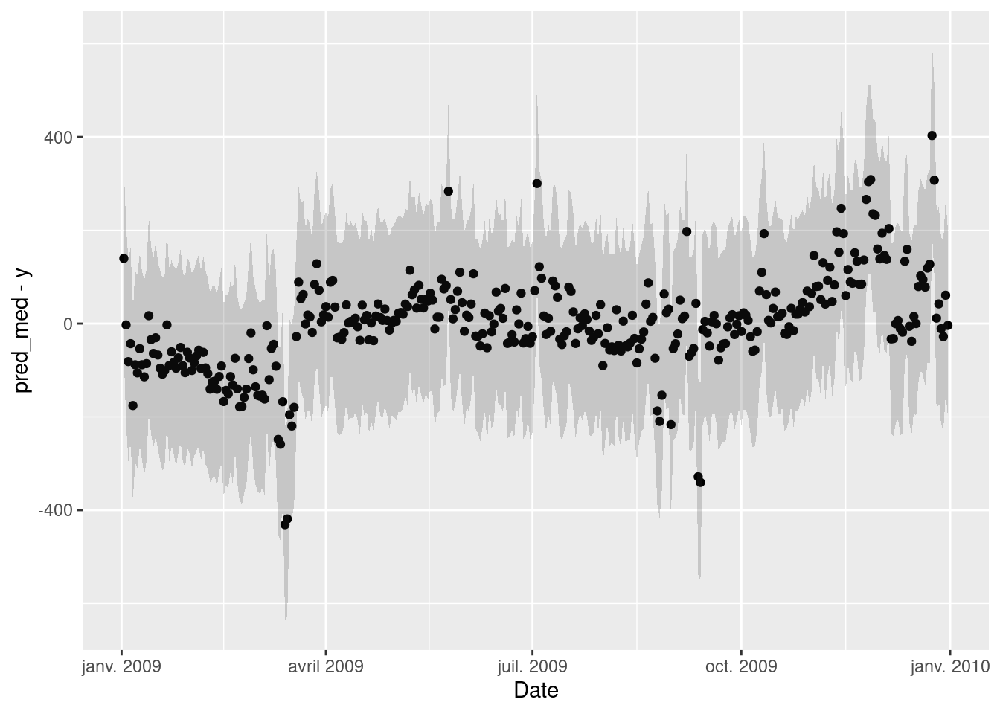
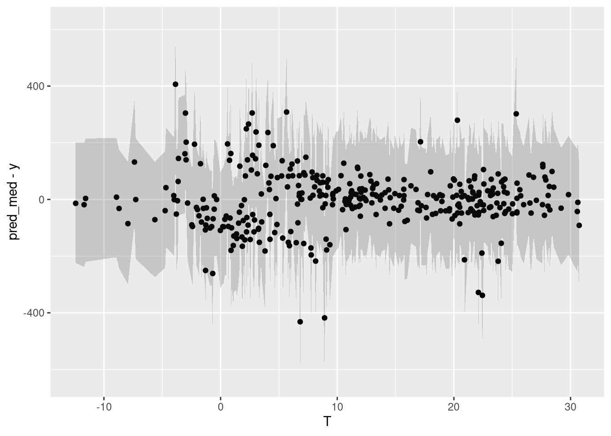

Chapter 7 Validation and results
Stan returns an object (called fit1 above) from which the distributions of outputs and parameters of the fitted model can be accessed
https://cran.r-project.org/web/packages/rstan/vignettes/stanfit-objects.html
The MCMC algorithm produces a chain of samples \(\theta^{(m)}\) for the parameters, which approximate their posterior distributions. In this case, each parameter of the model is represented by a chain of 6,000 draws: from these draws, we can extract any statistics we need: mean, median, quantiles, \(t\)-score and \(p\)-values, etc.
7.1 Parameters
As a first validation step, it is useful to take a look at the values of the parameters that have been estimated by the algorithm. Below, we use three diagnostics tools:
- The
printmethod shows the table of parameters, much like we could display after an ordinary linear regression traceplotshows the traces of the selected parameters. If the fitting has converged, the traces approximate the posterior distributionspairsshows the pairwise relationships between parameters. Strong interactions between some parameters are an indication that the model should be re-parameterised.
## Inference for Stan model: 2f8fdf9f22a34576398be759917c5a83.
## 2 chains, each with iter=4000; warmup=1000; thin=1;
## post-warmup draws per chain=3000, total post-warmup draws=6000.
##
## mean se_mean sd 2.5% 25% 50% 75% 97.5%
## alpha[1] 447.77 1.00 38.83 351.87 428.53 452.36 473.53 508.54
## alpha[2] 829.93 0.21 12.65 803.18 822.10 830.30 838.69 853.36
## beta_h[1] 35.79 0.06 3.56 29.21 33.28 35.59 38.10 43.25
## beta_h[2] 33.40 0.05 2.85 27.78 31.49 33.42 35.30 39.05
## tau_h[1] 9.90 0.04 1.51 7.34 8.81 9.85 10.77 13.31
## tau_h[2] 6.51 0.01 0.80 5.17 5.95 6.43 6.97 8.36
## beta_c[1] 14.68 0.29 8.53 6.37 10.38 12.82 15.71 43.44
## beta_c[2] 29.36 0.05 3.30 23.12 27.06 29.30 31.60 35.90
## tau_c[1] 16.03 0.14 4.39 7.98 13.46 15.78 18.02 27.23
## tau_c[2] 15.81 0.02 1.03 13.60 15.13 15.90 16.54 17.58
## sigma 103.09 0.05 3.84 95.93 100.42 103.02 105.61 110.90
## savings 69117.32 35.49 2812.31 63642.11 67235.87 69117.68 71041.21 74618.02
## n_eff Rhat
## alpha[1] 1505 1.00
## alpha[2] 3616 1.00
## beta_h[1] 3752 1.00
## beta_h[2] 3851 1.00
## tau_h[1] 1729 1.00
## tau_h[2] 3012 1.00
## beta_c[1] 838 1.01
## beta_c[2] 4358 1.00
## tau_c[1] 999 1.01
## tau_c[2] 3423 1.00
## sigma 5919 1.00
## savings 6279 1.00
##
## Samples were drawn using NUTS(diag_e) at Tue Jun 15 21:39:57 2021.
## For each parameter, n_eff is a crude measure of effective sample size,
## and Rhat is the potential scale reduction factor on split chains (at
## convergence, Rhat=1).

7.2 Predictions
https://mc-stan.org/docs/2_26/stan-users-guide/posterior-prediction-chapter.html
Our main goal here is to compare the energy use measured during the reporting period \(y_\mathit{repo}\) with the predictions of the fitted model. Since it is a probabilistic model, its outcome is actually a probability distribution \(p\left(y_\mathit{repo}|x_\mathit{repo}, x_\mathit{base}, y_\mathit{base}\right)\), based on the observed values of the model inputs \(x\) during the baseline and reporting periods, and on the observed energy use during the baseline period \(y_\mathit{base}\).
This so-called posterior predictive distribution \(p\left(y_\mathit{repo}|...\right)\) is already directly available, because a value of \(y_\mathit{repo}\) (for each time step) was directly calculated by the Stan model for each value \(\theta^{(m)}\).
\[ p\left(y_\mathit{repo}|...\right) \approx \frac{1}{M} \sum_{m=1}^M p\left(y_\mathit{repo}|x_\mathit{repo},\theta^{(m)}\right) \] First, let us look at the posterior predictive distribution during the baseline period, in order to validate the model compared to its training data:
# Extracting full predictive distributions from the stanfit object
la <- rstan::extract(fit1, permuted = TRUE)
y_base_pred <- la$y_base_pred
# Quantiles
y_base_quan <- apply(y_base_pred, 2, quantile, probs=c(0.025, 0.5, 0.975))
# Data frame
df.base.post <- data.frame(Date = df.base.daily$Date, T = df.base.daily$T, y = df.base.daily$E, w = df.base.daily$week.end,
pred_low = y_base_quan[1, ], pred_med = y_base_quan[2, ], pred_up = y_base_quan[3, ])
# Plot
ggplot(data = df.base.post) +
geom_point(mapping = aes(x=T, y=y, color=w)) +
geom_line(data = . %>% filter(!df.base.post$w), mapping = aes(x=T, y=pred_med), color='red') +
geom_ribbon(data = . %>% filter(!df.base.post$w), mapping = aes(x=T, ymin=pred_low, ymax=pred_up), fill='red', alpha=0.1) +
geom_line(data = . %>% filter(df.base.post$w), mapping = aes(x=T, y=pred_med), color='blue') +
geom_ribbon(data = . %>% filter(df.base.post$w), mapping = aes(x=T, ymin=pred_low, ymax=pred_up), fill='blue', alpha=0.1) The colored bands show a 95% prediction interval for the working days and the week ends, respectively. The points are the measurements of the baseline period.
7.3 Residuals
An important validation step is to check for autocorrelation in the residuals of the fitted model, on the baseline data that was used for fitting. Autocorrelation is often a sign of insufficient model complexity, or that the form of the model error term has not been appropriately chosen.
The two graphs below show:
- Residuals vs Date, in order to display eventual autocorrelation
- residuals vs Temperature
ggplot(data = df.base.post) +
geom_point(mapping = aes(x=Date, y=pred_med-y)) +
geom_ribbon(mapping = aes(x=Date, ymin=pred_low-y, ymax=pred_up-y), alpha=0.2)
ggplot(data = df.base.post) +
geom_point(mapping = aes(x=T, y=pred_med-y)) +
geom_ribbon(mapping = aes(x=T, ymin=pred_low-y, ymax=pred_up-y), alpha=0.2) The second graph is fine, but it seems that these is a trend in the residuals in the first few months and last few months of the year, suggesting that the model doesn’t quite capture the winter energy consumption very well.